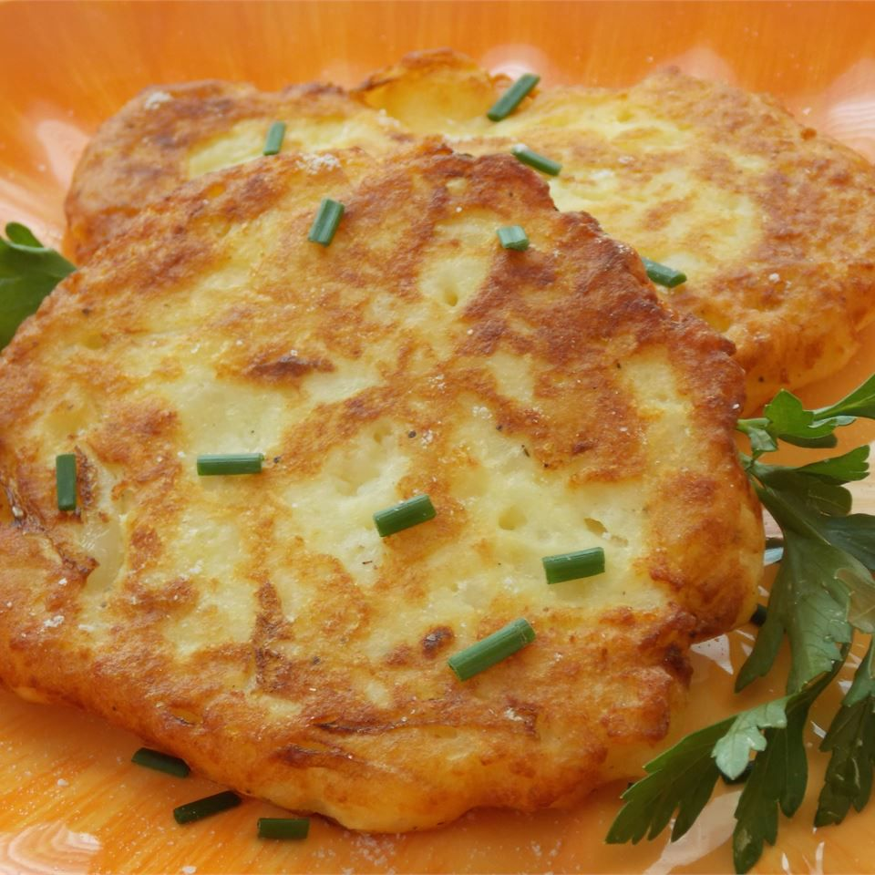

Old-fashioned potato cakes

Description
These potato cakes are simple and quick to make with only a few ingredients.
Great with any meal and kids of all ages love 'em!
Ingredients
- 2 cups mashed potatoes
- 1 cup all-purpose flour
- 1 onion, diced
- 1 egg
- ½ teaspoon ground black pepper
- ½ teaspoon salt
- ½ cup vegetable oil, or as needed
Steps
-
Mix mashed potatoes, flour, onion, egg, black pepper, and salt in a bowl until well combined,
similar to a batter consistency.
-
Heat vegetable oil in a skillet over medium heat. Drop 4-inch circles of batter into the hot oil.
Cook until golden brown, about 4 to 5 minutes per side; drain on paper towels. Repeat with any remaining batter.